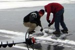

|
|
Participants & Products
2007 Students
|
Name: Gary Olsen-Saville
School: Delta High School, Alaska
Project: Bison Locations during Calving Season on Fort Greenly Army base, Delta, Alaska (PDF: 140K) |
|
Name: Collin Peter Atti and Charlie Evon
School: Kwigillingok High School, Lower Kuskokwim
Project: Waterfowl and Climate (PDF: 357K) |
|  |
Name: Chris Becker and Zachary Boyden
School: Colony High School, Mat-Su
Project: Cottonwood Lake Ice Formations: How Air Water Temperature Affect the Creation of Lake Ice on Cottonwood Lake, Wasilla, Alaska (PDF: 3.9M) |
|
Name: Megan Bowker and Blake Wanberg
School: Colony High School, Mat-Su
Project: The Effect of Storm Drain Run-off on Total Aerobic and Coliform Bacteria Blooms in Cottonwood Creek Wasilla, Alaska (PDF: 356K) |
|
Name: Maggie Igkurak and Alexie Phillip
School: Kongiganak
Project: Depth to Permafrost (PDF: 84K) |
|
Name: Barbie M. Sam and Alexander Vent
School: Huslia High School, Yukon
Project: Koyukuk River Bank Erosion (PDF: 790K) |
|
Name: Elise Christie
School: Juneau District High School, Juneau
Project: The Effects of Fresh Water Exposure on Clam Length and Population Density (PDF: 175K) |
|
Name: John Jones
School: Juneau District High School, Juneau
Project: Bioband Distribution due to Water Action (PDF: 204K) |
|
Name: Anna Woern and Celia Southworth Haering
School: Central Middle School, Anchorage
Project: What is the Effect of Earthquakes on Urban Areas (PDF: 139K) |
|
Name: Hunter Kirkpatrick
School: Dzanti'ki Heeni Middle School, Juneau
Project: How Can I Become a Better Hunter? (PDF: 371K) |
|
Name: Bethany Frawley
School: Dzanti'ki Heeni Middle School, Juneau
Project: How Does Habitat Classification Affect Snow Depth (PDF: 247K) |
|
Name: Brittany Bullard and Grace Woern
School: Begich Middle School, Anchorage
Project: Moose Fatalities on Tudor Road (PDF: 222K) |
2006 Students
|
Name: Sam Bornstein
School: Juneau-Douglas High School, Alaska
Project: How Location Effects Potential Tidal Energy (PDF: 89K) |
|
Name: Jennifer Parkin and Shiann Braley
School: Angoon High School, Angoon, Alaska
Project: How Coastal Erosion Effects Life in Angoon Alaska (PDF: 100K) |
|
Name: Chase Hand and Maggie Dunleavy
School: Mat-Su Correspondence Study and Wasilla High School
Project: Alaska’s Sweet Clover Infestation Problem - Analysis and Recommendation (PDF: 163K) |
|
Name: Janet Brink and Marie Seal
School: Anna Tobeluk Memorial School
Project: Mapping An Alaska Village Nunapitchuk, Kuskokwim river Delta (PDF: 230K) |
|
Name: Sean Boyden, Kalli Brettrager and Susan Skvorc
School: Colony High School
Project: Effect of Aspect on Inorganic Properties of Two Creeks in the Government Peak Watershed (PDF: 171K) |
|
Name: Lexie Krell and Kalli Brettrager
School: Colony High School, Matanuska-Susitna, Alaska
Project: How Climate Warming Affects Matanuska-Susitna, Alaska (PDF: 190K) |
|
Name: Valerie Jensen and Sylvie Schumacher
School: Yakutat High School
Project: Logging and It's Effect on Anadromous fish of Yakut (PDF: 125K) |
|
Name: Molly and Tyler Emerson
School: Juneau-Douglas High School, Juneau, Alaska
Project: How Climate Warming Affects Juneau, Alaska (PDF: 229K) |
|
Name: Kelsey, Janet, Cindy and Marie
School: A.T. Middle School, Nunapitchuk, Alaska
Project: How Climate Warming Affects Nunapitchuk, Alaska (PDF: 136K) |
 |
Name: Kurt Wade
School: Floyd Dryden Middle School, Juneau, Alaska
Project: Is the Steep Creek Bear Habituated to People? (PDF: 706K) |
|
Name: Pat Henderson
School: Haines, Alaska
Project: What I learned (PDF: 213K) |
|
Name: Sierra Risley and Sorcha Hazelton
School: Floyd Dryden Middle School, Juneau, Alaska
Project: How the forest has changed around Floyd Dryden middle School and Glacier Valley Elementary school between 1942 and 1996 (PDF: 280K) |
|